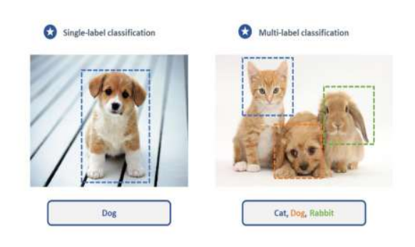
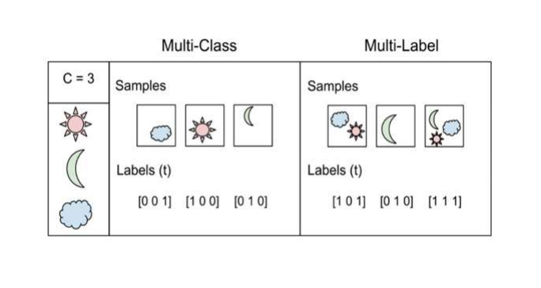
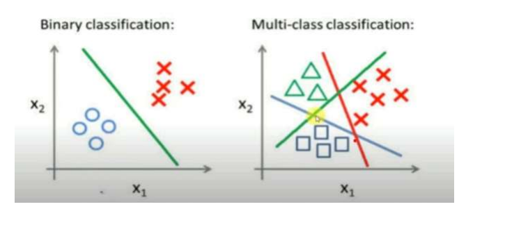
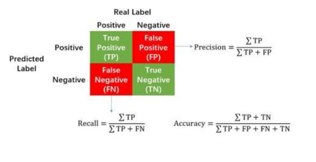
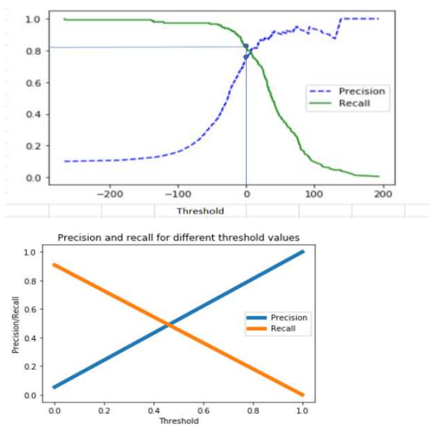

Machine Learning — Examination Preparation
Questions 26 – 30
Question 26
Naïve Bayes is a probabilistic classification algorithm based on Bayes' Theorem. It assumes that all features are conditionally independent of each other given the class label. Despite this simplifying assumption, the algorithm performs well in practice, particularly for text classification and spam filtering tasks. It computes the posterior probability of each class given the input features and selects the class with the highest probability as the prediction.
The mathematical foundation of Naïve Bayes is:
| Term | Name | Meaning |
|---|---|---|
| P(C | X) | Posterior probability | Probability of class C given input data X |
| P(X | C) | Likelihood | Probability of observing X if the class is C |
| P(C) | Prior probability | Inherent probability of class C in the dataset |
| P(X) | Evidence | Total probability of X; constant across all classes |
Naïve Bayes assumes that all features x₁, x₂, …, xₙ are conditionally independent given the class label C. This allows the likelihood to be decomposed as a product of individual feature likelihoods:
In practice, this assumption is rarely strictly true. For example, in email spam detection, the words "offer" and "free" are treated as independent even though they frequently co-occur. Nonetheless, the assumption greatly simplifies computation and still yields competitive accuracy.
| Type | Data Type | Assumption | Common Use Case |
|---|---|---|---|
| Gaussian Naïve Bayes | Continuous | Features follow a normal (Gaussian) distribution | Medical diagnosis, iris classification |
| Multinomial Naïve Bayes | Discrete (counts) | Features represent event frequencies or word counts | Text classification, document categorisation |
| Bernoulli Naïve Bayes | Binary (0 or 1) | Each feature is a binary indicator of presence or absence | Spam detection using word presence/absence flags |
| Advantages | Limitations |
|---|---|
| Computationally efficient; fast to train and predict | The independence assumption is often unrealistic |
| Performs well with small training datasets | Cannot capture feature correlations or interactions |
| Scales well to high-dimensional data | Sensitive to zero-frequency problem (requires smoothing) |
| Well-suited for text and document classification | Not suitable for regression or complex non-linear problems |
Naïve Bayes is a simple yet effective probabilistic classifier that leverages Bayes' theorem with the assumption of conditional feature independence. It is particularly suitable for text-based and high-dimensional classification problems, offering fast training, low computational cost, and reasonable accuracy. It remains a foundational algorithm in machine learning despite the naïvety of its core assumption.
Question 27
Multi-label classification is a type of supervised learning problem in which each instance can be assigned to multiple class labels simultaneously. This is in contrast to single-label classification, where each instance belongs to exactly one class. The output of a multi-label model is a set of labels rather than a single label.

These methods convert a multi-label problem into one or more standard single-label classification problems, allowing conventional algorithms to be applied.
(a) Binary Relevance (BR)
Binary Relevance decomposes the multi-label problem into a set of independent binary classification tasks, one per label. Each binary classifier independently predicts whether its corresponding label is present or absent. The final predicted label set is the union of all positive predictions.
(b) Classifier Chains (CC)
Classifier Chains extends Binary Relevance by arranging the binary classifiers in a sequential chain. Each classifier receives the original feature vector along with the binary predictions of all preceding classifiers as additional input features. This allows the model to capture inter-label dependencies by conditioning each prediction on the outcomes of prior classifiers in the chain.
(c) Label Powerset (LP)
Label Powerset treats each unique combination of labels present in the training data as a distinct class, converting the multi-label problem into a standard multi-class classification problem over label subsets.
Rather than transforming the problem, these methods modify existing classification algorithms to natively handle multi-label output.
(a) ML-kNN (Multi-Label k-Nearest Neighbours)
ML-kNN adapts the k-Nearest Neighbours algorithm for multi-label settings. For a new instance, the k nearest neighbours are identified. The algorithm uses the label frequencies among those neighbours along with Bayesian priors to estimate the posterior probability for each label. Labels whose posterior probability exceeds a set threshold are predicted as positive.
(b) RAKEL (RAndom k-labELsets)
RAKEL randomly partitions the full label set into small overlapping subsets. A Label Powerset classifier is trained on each subset. During prediction, the outputs of all subset classifiers are aggregated by voting to produce the final label set. This approach manages the exponential label-combination problem of LP while partially preserving label dependencies.
(c) Deep Learning Models
Neural networks are highly suitable for multi-label classification. The output layer is configured with one neuron per label, each with a sigmoid activation function so that each output is an independent probability in [0, 1]. Labels whose predicted probability exceeds a threshold (typically 0.5) are assigned as positive. The model is trained using binary cross-entropy loss computed independently for each label.
| Metric | Description |
|---|---|
| Hamming Loss | Fraction of labels incorrectly predicted (false positives and false negatives) averaged across all instances. |
| Subset Accuracy | Proportion of instances for which the predicted label set exactly matches the true label set; the strictest metric. |
| Precision / Recall / F1 | Standard metrics extended to multi-label settings, computed per label and then macro- or micro-averaged. |
| Jaccard Index | Intersection of predicted and true label sets divided by their union. |
Multi-label classification is an important paradigm for problems where instances belong to several categories simultaneously. Methods such as Binary Relevance, Classifier Chains, and Label Powerset offer different trade-offs between simplicity and the ability to model label dependencies. Algorithm adaptation approaches such as ML-kNN and deep learning models provide powerful alternatives. The choice of method depends on the number of labels, the degree of inter-label dependency, and the available computational resources.
Question 28
Multi-class classification is a type of supervised learning in which a model must assign each input instance to one of three or more mutually exclusive classes. Unlike binary classification, which involves only two classes, and multi-label classification, where multiple labels may be assigned simultaneously, each data point in a multi-class problem belongs to exactly one class.
| Type | Number of Classes | Labels per Instance | Example |
|---|---|---|---|
| Binary | 2 | Exactly 1 | Spam / Not Spam |
| Multi-class | > 2 (mutually exclusive) | Exactly 1 | Classify fruit as apple, banana, or orange |
| Multi-label | > 2 (non-exclusive) | One or more | A movie tagged as Action, Comedy, and Thriller |


(a) One-vs-All (OvA) / One-vs-Rest (OvR)
For a dataset with N classes, N separate binary classifiers are trained. Each classifier learns to distinguish one class from all remaining classes combined. For a new instance, all N classifiers produce a confidence score and the class whose classifier produces the highest score is selected as the prediction.
Example with three classes — Green, Blue, Red (N = 3):
(b) One-vs-One (OvO)
A separate binary classifier is trained for every unique pair of classes. A new instance is passed through all classifiers; each votes for one of its two classes, and the class receiving the most votes overall is the final prediction.
Using the same three-class example (N = 3):
| Aspect | One-vs-All (OvA) | One-vs-One (OvO) |
|---|---|---|
| Classifiers required | N | N(N−1)/2 |
| Training data per classifier | Full dataset (class imbalance possible) | Subset of two classes only |
| Prediction method | Highest confidence score | Majority vote |
| Preferred when | N is large | Each binary subproblem is simpler |
(c) Softmax Regression (Multinomial Logistic Regression)
Softmax regression generalises logistic regression directly to the multi-class setting without binary decomposition. It computes a probability distribution over all K classes simultaneously using the softmax function:
where zₖ is the linear score for class k. The class with the highest probability is selected as the prediction. Softmax regression is widely used as the output layer of neural networks for multi-class classification tasks, and is trained using categorical cross-entropy loss.
Multi-class classification extends binary classification to problems involving three or more mutually exclusive categories. Techniques such as One-vs-All, One-vs-One, and Softmax regression provide different strategies for managing the increased complexity of multiple classes. With appropriate algorithm selection, feature engineering, and evaluation, multi-class classification can be applied effectively to a wide range of real-world problems including handwritten digit recognition, image categorisation, and natural language processing.
Question 29
Logistic Regression is a supervised machine learning algorithm used primarily for binary classification problems, where the dependent variable takes one of two possible values (e.g., 0 or 1, Pass or Fail). Unlike linear regression, which produces unbounded continuous outputs, logistic regression predicts the probability that a given input belongs to a particular class, ensuring the output remains within the valid range of [0, 1].
The model establishes a linear combination of input features, which is then passed through the sigmoid (logistic) function to produce a probability. A decision threshold — typically 0.5 — is applied to convert the probability into a discrete class label.
The sigmoid function is defined as:
where z = β₀ + β₁x₁ + β₂x₂ + … is the linear combination of input features and model parameters (weights).
| Property | Significance |
|---|---|
| Bounded output [0, 1] | Ensures all predictions are valid probabilities; the output is never negative or greater than 1. |
| Non-linear mapping | Converts the linear decision function into a smooth probabilistic output suitable for classification. |
| Differentiable everywhere | Enables gradient-based optimisation (e.g., gradient descent) for efficient parameter learning. |
| S-shaped (sigmoidal) curve | Provides a smooth, monotonically increasing transition from 0 to 1, with the steepest gradient near z = 0. |
| Natural decision boundary | At z = 0, σ(z) = 0.5, naturally defining the classification threshold point. |
| Foundation for neural networks | The sigmoid serves as an activation function in neural network layers and is the basis for the softmax function used in multi-class output layers. |
The following data records the study hours and exam outcomes for five students.
| Student ID | Study Hours (x) | Exam Result (y) |
|---|---|---|
| 1 | 2 | 0 (Fail) |
| 2 | 4 | 0 (Fail) |
| 3 | 6 | 1 (Pass) |
| 4 | 8 | 1 (Pass) |
| 5 | 10 | 1 (Pass) |
Step 1 — Define the model. By inspection, students studying fewer than 5 hours failed and those studying more than 5 hours passed. A simple linear model is assumed:
Step 2 — Apply the sigmoid function to each data point to compute the predicted probability of passing.
| x (hours) | z = x − 5 | e−z | σ(z) = P(Pass) | Prediction |
|---|---|---|---|---|
| 2 | −3 | e³ ≈ 20.085 | 1/21.085 ≈ 0.047 | Fail (0) |
| 4 | −1 | e¹ ≈ 2.718 | 1/3.718 ≈ 0.269 | Fail (0) |
| 6 | 1 | e−1 ≈ 0.368 | 1/1.368 ≈ 0.731 | Pass (1) |
| 8 | 3 | e−3 ≈ 0.0498 | 1/1.0498 ≈ 0.952 | Pass (1) |
| 10 | 5 | e−5 ≈ 0.0067 | 1/1.0067 ≈ 0.993 | Pass (1) |
Step 3 — Decision rule:
The results demonstrate that as study hours increase, the predicted probability of passing increases monotonically. Students who studied 2 or 4 hours were predicted to fail (P(Pass) < 0.5), while those who studied 6, 8, or 10 hours were predicted to pass. This confirms that logistic regression, through the sigmoid function, successfully identifies a threshold — here approximately 5 study hours — beyond which the probability of passing exceeds 0.5. All five predictions are consistent with the actual outcomes, confirming the validity of the assumed model.
Question 30
Precision and Recall are two fundamental evaluation metrics used in classification problems, particularly when the dataset is imbalanced or when the costs associated with different types of misclassification are unequal. Both metrics are derived from the confusion matrix, which records the counts of True Positives (TP), True Negatives (TN), False Positives (FP), and False Negatives (FN).

Precision measures the proportion of instances predicted as positive that are actually positive. It answers the question: Of all the instances labelled positive by the model, how many were correct?
A high precision value indicates that the model produces few false positives — when it predicts the positive class, it is likely to be correct. This property is critical in applications such as spam detection, where incorrectly classifying a legitimate email as spam is undesirable.
Example: In a spam detection system, if 100 emails are predicted as spam and 80 are actually spam: Precision = 80 / 100 = 0.80 (80%).
Recall measures the proportion of actual positive instances that were correctly identified by the model. It answers the question: Of all instances that are truly positive, how many did the model successfully identify?
A high recall value indicates that the model misses few actual positive cases. This is critical in applications such as medical diagnosis, where failing to detect a disease (a false negative) can have serious consequences.
Example: In a disease detection system with 100 sick patients, if the model correctly identifies 90: Recall = 90 / 100 = 0.90 (90%).
| Metric | Focus | Minimises | Critical When |
|---|---|---|---|
| Precision | Correctness of positive predictions | False Positives (FP) | False alarms are costly |
| Recall | Coverage of actual positive cases | False Negatives (FN) | Missing a positive case is dangerous |
In most classification systems, precision and recall cannot be simultaneously maximised. This trade-off arises from the decision threshold used to classify instances:

Scenario 1 — High Precision, Low Recall: The model is conservative and only predicts positive when highly certain. This results in few false positives but many missed actual positives. Typical use case: fraud detection, where falsely flagging a legitimate transaction is costly.
Scenario 2 — High Recall, Low Precision: The model is lenient and predicts positive broadly. This captures most actual positives but introduces many false alarms. Typical use case: cancer screening, where missing a positive diagnosis is dangerous.
The F1 Score is the harmonic mean of Precision and Recall, providing a single metric that balances both concerns. It is especially useful when there is an unequal class distribution or when both false positives and false negatives carry significant costs.
The harmonic mean penalises extreme imbalances between precision and recall more severely than the arithmetic mean, making it a reliable balanced metric.
| Domain | Preferred Metric | Reason |
|---|---|---|
| Medical screening / disease detection | High Recall | Missing a positive diagnosis can be life-threatening. |
| Spam detection | High Precision | Marking a legitimate email as spam is disruptive. |
| Fraud detection | Balanced F1 | Both missed fraud and false accusations carry costs. |
| Information retrieval | Precision–Recall curve | Overall model performance is evaluated across thresholds. |
Precision and Recall are complementary metrics that capture different aspects of a classifier's performance. Precision reflects how reliable positive predictions are, while Recall reflects how completely the model identifies all actual positive instances. Because improving one typically reduces the other, practitioners must select the appropriate metric — or use the F1 Score as a balanced measure — based on the specific costs and risks associated with false positives and false negatives in the given application domain.